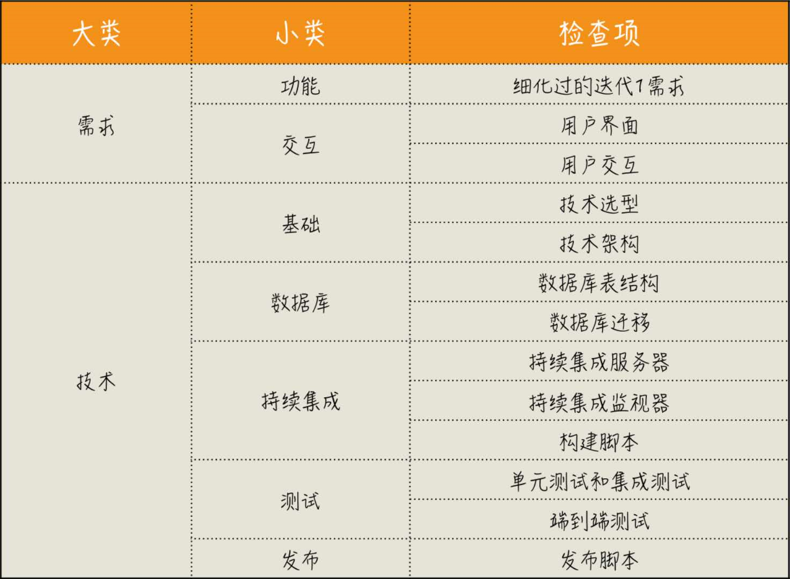

当一个产品经理比例我交代一个要开发的功能特性时，我通常会问他这样一些问题：
- 1）为什么要做这个特性，它会给用户带来怎样的价值？
- 2）什么样的用户会用到这个特性，他们在什么场景下使用，他们又会怎样使用它？
- 3）达成这个目的是否有其它手段？是不是一定要开发一个系统？
- 4）这个特性上线之后，怎样衡量它的有效性？
思考框架：
- 1）以终为始：就是在工作的一开始就确定好自己的目标。我们需要看到的是真正的目标，而不是把别人交代给我们的工作当作目标
- 2）任务分解：将大目标拆分成一个一个可行的执行任务，工作分解得越细致，我们便越能更好地掌控工作
- 3）沟通反馈：是为了疏通与其他人交互的渠道。一方面，我们保证信息能够传达出去，减少因为理解偏差造成的工作疏漏；另一方面，也要保证我们能够准确接收外部信息，以免因为自我感觉良好，阻碍了进步
- 4）自动化：将繁琐的工作通过自动仳的方式交给机器执行，这是我们工作中最值得优化的部分
许多人都是刚刚听到别人要求做的一个功能，就开始脑补接下来的一切
想象共同体，这个“集体想象”就是我们要做的软件，任何想象都需要一个载体将其展现出来，我们编写软件的过程就是将这个“集体想象”落实的过程
任何事物都要经过两次创造：一次是在头脑中的创造，也就是智力上的或者第一次创造（Mental/First Creation），然后才是付诸实践，也就是实际的构建或第二次创造（Physical/Second Creation）
在动手做事之前：
- 1）要给用户看产品的样子，可以用原型工具把它做出来，而不是非得把完整功能开发出来
- 2）要呈现服务接口的样子，可以用模拟服务器搭出一个服务，而不用等后端全部开发完毕
- 3）要让程序员知道要开发产品的细节，可以在任务上描述出软件各种场景给出的各种行为
测试驱动开发：测试是什么？就是你这段代码的“终”，只有通过测试了，我们才有资格说代码完成了。当然，测试驱动开发想做好，并不是先写测试这么简单的
持续集成：我们是要交付一个可运行的软件，倒着来想，最好的做法就是让软件一直处于可运行的状态，那就是持续地做集成
践行“以终为始”就是在做事之前，先考虑结果，根据结果来确定要做的事情
亚马逊CTO介绍如何开发一项产品：
- 1）写新闻稿
- 2）写FAQ（常见问题解答）
- 3）写用户文档
- 4）写代码
DoD（Definition of Done，完成的定义），这个概念本身并不复杂，它就是告诉我们怎样算是完成了，尽量减少因为理解偏差造成的各种浪费。具体怎么做呢？就是团队在开始工作前，先制定DoD：
- 1）DoD是一个清单，清单是由一个个的检查项组成的，用来检查我们的工作完成情况。就是我们开发产品所需的一系列有价值的活动
- 2）DoD的检查项应该是实际可检查的
- 3）DoD是团队成员间彼此汇报的一种机制。当我们有了DoD，做事只有两种状态，即“做完”和“没做完”
很多团队的一个状态就是，程序员们都知道要开发的功能是什么，但这个是谁在什么样的场景下使用的，很多人却回答不上来。如果你去问他为什么要开发这个功能，他通常会说：这是功能列表里规定的。这种功能列表式的需求描述方式，将一个完整的需求敲成了碎片。只有所有功能全部开发完成，对接在一起的时候，才是“破镜重圆”的时刻
一个完整的用户故事大致包含：
- 1）标题，简要地说明这个用户故事的主要内容
- 2）概述，简要地介绍这个用户故事的主要内容，作为一个角色，要做什么样的事，以便达成一种怎样的效果
- 3）详述，详细地描述这个用户故事的完整流程，我们会把操作流程、用户界面等信息都放到这里
- 4）验收标准：描述一个正常使用的流程是怎样的，以及各种异常流程系统是如何给出响应的，这是程序员常常会欠缺的思考
验收标准给出了这个需求最基本的测试用例，它保证了开发人员完成需求最基本的质量。如果了解BDD，就可以按照验收标准中给出的内容编写验收测试用例了
我们必须要有自己的独立思考，多问几个为什么，尽可能减少掉到“坑”里之后再求救的次数
既然是不确定的，那你唯一能做的事情就是试。得到的结果无非两种：好的想法继续加强，不靠谱的想法丢掉算了。不管是哪种结果，你都会产生新的想法，再进入到下一个循环里。在这个反馈循环中，你所获得的认知是最重要的，因为它是经过验证的。在精益创业中，这也是一个很重要的概念：经过验证的认知（Validated Learning）
你要做这个产品特性，你要验证的东西是什么呢？他要验证的目标是否有数据可以度量呢？要解决的这个问题是不是当前最重要的事情，是否还有其他更重要的问题呢？如果上面的问题都得到肯定的答复，那么验证这个目标是否有更简单的解决方案，是不是一定要通过开发一个产品特性来实现呢？
你在项目里打杂，你只双腿关注到一个具体的任务，而项目主力心目中是整个系统。虽然写的代码都一样，但你看到的是树木，人家看到的是森林，他更能从全局思考
技术是一把利刃，程序员相信技术可以改变世界，但并不是所有问题都要用技术解决。有这样一种说法，手里有了锤子，眼里都是钉子。花大力气去解决一个并不是问题的问题，常常是很多程序员的盲区
当你对软件开发的全生命周期都有了认识之后，你看的就不再是一个点了，而是一条线。当扩大了自己工作 的上下文时，我们的目标就不再局限于一个单点，而是会站在更高的维度去思考，解决问题还有没有更简单的方案。许多在低一级难以解决的问题，放到更大的上下文里，根本就不是问题
一些人说，自己靠直觉就能把事情做好，其实这是一种误解，因为那种所谓的直觉，通常是一种洞见（Insight），洞见很大程度上依赖于一个人在一个领域长期的沉淀和积累，而这其实是某种意义上的大数据
当事情复杂到一定程度时，简单地靠感觉是很难让人相信的
如果你认同了数据本身的价值，那么再结合“以终为始”的理念，我们就应该在着手做一件事之前，先来想怎么去测量。无论是在讨论产品特性，还是功能开发，“信口雌黄”是容易的，落到数字上，人们就会多想一下，这是对彼此的约束
从数字上看，好的系统应该是“死水一潭”。因为出现波动尤其是大幅度波动，又不能给出一个合理解释的话，就说明系统存在着隐患。而让系统稳定，正是我们工作的一个重要组成部分
迭代0，具体的内容只是基本的清单：
- 1）需求方面
- 细化过的迭代1需求
- 用户界面和用户交互：如果你的项目是一个有用户界面的产品，给出用户界面，自然也是要在迭代0完成的。另外，还有一个东西也应该在迭代0定义清楚，那就是用户交互
- 2）技术方面
- 基本技术准备：持续集成、测试（把测试当作规范确定下来的办法就是把测试覆盖率加入构建脚本）
- 发布准备：好在现在已经有了很多工具支持，比如flyway，它可以把每一次数据库变更都当作一个文件

管理上级：
- 1）管理上级的预期
- 2）帮助上级丰富知识
- 3）说出你的想法
“抄”不是问题，问题是无脑的抄
要做什么是需求，怎么做是技术。与产品经理要确认的是，这个需求是不是合理，该不该做。技术上能否实现，这是开发团队要考虑的事情，并不是产品经理说事的理由
以始为终实战指南：
- 1）遇到事情，倒着想
- 2）在做任何事之前，先定义完成的标准
- 3）在做任何需求或任务之前，先定验收标准
- 4）尽早提交代码去集成
- 5）默认所有需求都不做，直到弄清楚为什么要做这件事
- 6）扩大自己工作的上下文，别把自己局限在一个“程序员”的角色上
- 7）在动手做一件事之前，先推演一番
- 8）问一下自己，我的工作是不是可以用数字衡量
- 9）设计你的迭代0清单，给自己的项目做体检
以始为终额外收获：
- 1）作为程序员，你可以管理你的上级
- 2）拿老板说事的产品经理，你可以到老板面前澄清
- 3）喜欢无脑搅成的产品经理，让他回去先想清楚到底抄的是什么
- 4）分清楚需求和技术，产品经理和开发团队各自做好各自的事
一个大问题，我们都很难给出答案，但回答小问题却是我们擅长的
不同的可执行定义差别在于，你是否能清楚地知道这个问题该如何解决
如果你没做过任务分解的练习，你分解出来的大部分任务，粒度都会偏大。只有能把任务拆分得非常小，你才能对自己的执行能力有一个更清楚地认识，真正的高手都是有很强的分解能力。这个差别就相当于，同样观察一个物品，你用的是眼睛，而高手用的是显微镜。在你看来，高手全是微操作。
在软件开发中有一个重要的概念：软件变更成本，它会随着时间和开发阶段逐步增加。也就是说我们要尽可能早地发现问题，修正问题，这样所消耗的成本才是最低的
更理想的情况是，质量保证是贯穿在软件开发全过程中，从需求开始的每一个环节，都将“测试”纳入考量，每个角色交付自己的工作成果时，都多问一够，你怎么保证交付物的质量。需求人员要确定验收标准，开发人员则要交出自己的开发者测试。这是一个来自于精益原则的重要思想：内建质量（Build Quality In）
学习TDD的第一步，是要记住TDD的节奏：“红-绿-重构”：
- 红，表示写了个新的测试，测试还没有通过的状态
- 绿，表示写了功能代码，测试通过的状态
- 重构，就是完成基本功能之后，调整代码的过程
如果你真的理解重构，你就知道，它就是一个消除代码坏味道的过程。一旦你有了测试，你就可以大胆地重构了，因为任何修改错误，测试会替你捕获到。在测试驱动开发中，重构与测试是相辅相成的：没有测试，你只能是提心吊胆地重构；没有重构，代码的混乱程度是逐步增加的，测试也会变得越来越不好写
一个好的解决方案尽量不写static方法：static方法，从本质上说，是一种全局方法，static变量就是一种全局变量。我们都知道，全局方法也好，全局变量也罢，都是我们要在程序中努力消除的。一旦放任static的使用，就会出现和全局变量类似的效果，你的程序崩溃了，因为别人在另外的地方修改了代码，代码变得脆弱无比。static是一个方便但邪恶的东西。所以，要限制它的使用。除非你的static方法是不涉及任何状态而且行为简单，比如，判断字段串是否为空。否则，不要写static方法。static方法更适合做库函数。所以我们日常写应用时，能不用尽量不用
不能测试的代码往往是与第三方相关的代码，比如访问数据库的代码，或是访问第三方服务之类的
极限编程之所以叫“极限”，它背后的理念就是把好的实践推向极限：
- 1）持续集成：如果集成是好的，我们就尽早集成，推向极限每一次修改都集成
- 2）测试驱动开发：如果开发者测试是好的，我们就尽早测试，推向极限就是先写测试，再根据测试调整代码
- 3）结对编程：如果代码评审是好的，我们就多做评审，推向极限就是随时随地地代码评审
- 4）现场客户：如果客户交流是好的，我们就和客户多交流，推向极限就是客户与开发团队时时刻刻在一起，这就是现场客户
只有把任务分解到很小，才有可能做到小步提交。你能任务分解到很小，其实是证明你已经想清楚了。而大多数程序员之所以开发效率低，很多时候是没想清楚就动手了
任务分解的关键在于：小。小到什么程度呢？有时候甚至可以小到你可能认为这件事不值得成为一件独立的事。比如升级一个依赖的版本，做一次变量改名。这样做的好处是，它保证了我们可以随时停下来
一个经过分解后的任务，需要关注的内容是有限的，我们就可以针对着这个任务，把方方面面的细节想得更加清晰
很多人习惯一个类一个类的写，但最好按照一个需求、一个需求的过程走，这样，任务是可以随时停下来的
检验每个任务项是否拆分到位，就是看你是否知道它应该怎么做了。不过，即便你技术能力已经很强了，我依然建议你把任务分解到很细，观其大略人人行，细致入微见本事
所有分解出来的任务都是独立的。也就是说，每做完一个任务，代码都是可以提交的。只有这样，我们才能做到真正意义上的小步提交
只有复杂的测试拆分成简单的测试，测试才有可能做好。如果你见到哪个测试写得很复杂，它一定不是一个好的测试
测试的坏味道：
- 1）很多人总想在一个测试里做很多事情，比如，出现了几个不同方法的调用。这个测试一旦出错，就需要把所有相关的几个方法都查看一遍，这无疑是增加了工作的复杂度。如果有多个方法要测试，那就多写几个测试就好了
- 2）没有断言的测试，是没有意义的
- 3）复杂，当测试代码里出现各种判断和循环语句时，基本上这个测试就有问题了
好的测试A-TRIP：
- 1）Automatic，自动化
- 2）Thorough，全面的
- 3）Repeatable，可重复的
- 4）Independent，独立的
- 5）Professional，专业的
很多人写不好测试，或者觉得测试难写，关键就在于，你始终是站在写代码的视角，而不是写测试的视角
基本上，闯入你脑海的需求描述是主题（epic），在敏捷开发中，有人称为主用户故事（master story）。如果你对需求的管理粒度就是主题，那好多事情就没法谈了
在“以始为终“，我们对用户故事的关注点主要是：用户故事一定要有验收标准，以确保一个需求的完整性。而在”任务分解“这个模块，我们看用户故事，则主要关注它作为需求分解的结果，也就是拆分出来要解决的一个个需求点
就凭一句”老板说的“，我们就可以判断出，产品经理缺乏对需求管理应有的理解
按照时间管理的理念，重要且紧急的事情要立即做。重要但不紧急的事情应该是我们重点投入精力的地方。紧急但不重要的事情，可以委托别人做。不重要不紧急的事情，尽量少做。如果不把精力放在重要的事情上，到最后可能都变成紧急的事情。
需求也没那么重要，直到产品经理能说明白它为什么重要，尤其是为什么比其他需求重要。
当员工想不明白的事，换成老板的视角就全明白了。
MVP：
- 1）“最小”，指的是最小的代价。就是能不做的事情就不做。能简化的事情就简化。
- 我们必须清楚一件事，我们要做的是验证一个想法的可行性，甚至不是为了开发一个软件，开发软件只是一种验证手段
- 开发软件是一件成本很高的事情。如果只是验证想法，无论是创业方向，还是产品设计，我们可以找到各种各样的手段，不用写代码
- 2）可行：要找到一条路径，给用户一个完整的体验
- 从产品角度，转换下思路，不是一个模块做得有多完整，而一条用户，而是一条用户路径是否通畅
- 当时间有限时，我们需要学会找到一条可行的路径，在完整用户体验和完整系统之间，找到一个平衡
如果不了解一项技术，如何分解？
- 1）变成你熟悉的技术
- 2）做一次技术Spike
- 3）Spike强调的重点在于快速地试，就是在一定的时间内完成
- 4）Spike的作用在于消除不确定性，让项目经理知道这里要用到一项全团队没有人懂的技术，需要花时间弄清楚
自动化改进过程：
- 1）把测试覆盖率检查加入到工程里，得到现有的测试覆盖率
- 2）将测试覆盖率加入持续集成，设定当前测试覆盖率为初始值。测试覆盖率不达标，不许提交代码
- 3）每周将测试覆盖率提高，直到测试覆盖率达到100%
任务分解重点复习：
- 1）测试金字塔：多写单元测试是关键
- 2）测试驱动开发
- 3）艾森豪威尔矩阵：重要、紧急、不重要、不紧急
- 4）最小可行产品
任务分解实战指南：
- 1）动手做一个工作之前，请先对它进行任务分解
- 2）多写单元测试
- 3）我们应该编写可测试的代码
- 4）将任务拆小，越小越好
- 5）按照完整实现一个需求的顺序去安排分解出来的任务
- 6）要想写好测试，就要写简单的测试
- 7）想要管理好需求，先把需求拆小
- 8）尽量做最重要的事
- 9）做好产品开发，最可行的方式是采用MVP
任务分解收获：
- 1）对不了解技术的任务，先要去了解技术，然后再做任务分解
- 2）通过一次技术Spike，学习新技术
- 3）丢弃掉在Pike过程中开发的原型代码
- 4）分清目标与现状，用目标作为方向，指导现状的改变
- 5）多个功能并行开发可以考虑使用Feature Toggle
- 6）在遗留系统上做改造可以考虑使用Branch by Abstraction
变量名是否够好，一个简单的评判标准是，拿着代码给人讲，你需要额外解释多少东西
任何人都能写出计算机能够理解的代码，只有好程序员才能写出人能够理解的代码
把“订单”的概念拆分了，也就有了：交易订单、物流订单和支付订单
把不同的概念分解出来，其实是界限上下文（Bounded Context）的作用，而在代码里尽可能使用业务语言，这是通用语言（Ubiquitous Language）的作用
开会是为了解决问题，但真实情况却是开了会又没有解决多少问题，这真是一个奇特的矛盾
改善会议的行动项：
- 1）减少参与讨论的人数
- 2）如果你要讨论，找人面对面沟通
持续集成的关键点：快速反馈；重要纪律：只有CI服务器处于绿色的状态才能提交代码；想要做好持续集成的一个关键点是，用好本地构建脚本（build script），保证各种各样的检查都可以在本地环境执行；CI服务器一旦检查出错，要立即修复；
在挑毛病找问题这件事上，人是不需要训练的，哪里用着不舒服，你一下子就能感受到。所以，不断地使用自家产品，你自己就是产品的用户，这会促使你不断去思考怎么改进产品，再与产品经理讨论时，你就自然而然地拥有了更多地维度
我们要做一个有价值的产品，这个“价值”，不是对产品经理有价值，而是要对用户有价值。华为任正非说过“让听得见炮声的人来做决策”
不是所有的问题，都是值得解决的技术难题
Fail Fast：如果遇到问题，尽早报错
只有你能把问题解决了大家才会高看你，而把问题遮盖住，并不能改善你在别人心目中的形象
很多人抱怨程序员行业难，原因就在于，新技术层出不穷。是的，当你的知道都是零散的，任何新技术的出现，都是新东西。而当你建立起自己的知识结构，任何新东西都只是在原有知识上的增量迭加
输出的过程，本质上就是把知道连接起来的过程。自己以为自己懂的东西，当你真的需要把它按照一个完整的逻辑呈现出来时，那些缺失的细节就会冒出来，而补齐这些细节，一张知识地图就逐渐成型了
金字塔原理：从中心论点、分论点至论据，这样一层层向下展开，从结构上看，就像金字塔一样，所以，这个方法称之为金字塔原理
写代码的进阶路径：
- 1）编写可以运行的代码
- 2）编写符合规范的代码
- 3）编写人可以理解的代码
- 4）用业务语言写代码
沟通反馈实战指南：
- 1）通过沟通反馈，不断升级自己的编解码能力
- 2）用业务的语言写代码
- 3）多面对面沟通，少开会
- 4）多尝试用可视化的方式进行沟通
- 5）做好持续集成的关键在于，快速反馈
- 6）定期复盘，找准问题根因，不断改善
- 7）多走近用户
- 8）事情往前做寿 ，有问题尽早暴露
- 9）多输出，让知识更有结构
沟通反馈收获：
- 1）持续集成是一条主线，可以将诸多实践贯穿起来
- 从持续集成到稳定的开发分支，到频繁提交，足够小的任务，到任务分解
- 从持续集成到可检查，到测试防护网，到测试覆盖率，到单元测试，到可测试代码，到软件设计
- 2）安全性检查，是回顾会议的前提条件
- 3）在信息获取上，国内外程序员差别不大，开拓视野，改善工作习惯，是国内程序员亟需提高的
重构，也属于微操作系列：你需要把做的代码调整分解成若干可以单独进行的“重构”小动作，然后，一步一步完成它
Martin Fowler给出了重构的两个定义：
- 重构（名词）：对软件内部结构的一种调整，目的是在不改变软件可观察行为的前提下，提高其可理解性，降低其修改成本
- 重构（动词）：使用一系列重构手法，在不改变软件可观察行为的前提下，调整其结构
我们程序员的工作，本质上就是打造各种自动化的工具，让人们从各种繁复的工作中解脱出来，让人有机会“偷懒”
做有价值的事是最重要的，这里面的有人偶 ，不仅仅是“做”了什么，通过“不做”节省时间和成本也是有价值的
NIH综合症：特别看不上别人做的东西，非要自己做出一套来，原因只是因为那个东西不是我做的，可能存在各种问题
写代码之前，先问问自己真的要做吗？能不做就不做，直到你有了足够的理由去做。对应到Larry Wall的说法，你要懒惰，花大力气去规避精力消耗
在软件开发中，其它的东西都是易变的，唯有设计的可变性是你可以控制的
如果工作多年，知识体系只能靠各种新框架新工具支撑，我们做程序员就只剩下疲于奔命了。不懂软件设计，只专注各种工具，其结果一定是被新技术遗弃，这也是很多人经常抱怨IT行业变化快的重要原因
运维体系：

一般来说，在构建持续将会的基础设施时，会有几个不同的环境：
- 1）持续集成环境，是持续交付的前提，主要是执行基本的检查，打出一个可以发布的包
- 2）测试环境（Test），往往是单机的，主要负责功能验证，这里运行的测试基本都是验收测试级别的，而一般把单元测试和集成测试等执行比较快的测试放到持续集成环境中执行
- 3）预生产环境（Staging），通常与生产环境配置相同，比如，负载均衡，集群之类 的都要有，只是机器数量上会少一些，主要验证部署环境，比如可以发现由多机并发带来的一问题
- 4）生产环境（Production）
通常不会将所有的验证放在一起执行，而是要分阶段地去执行，一个阶段不通过，是不能进入下一阶段的，这种按照不同阶段组织构建的方式，称之为构建流水线（Build Pipeline）
DevOps是将开发（Development）和运维（Operations）组合在了一起
Docker在开发中扮演的角色，是一个构建在我们应用与具体机器之间的中间层。对应用而言，它就是机器，但对机器而言，它只是一个可以部署的镜像，统一了各种应用于千奇百怪的部署差异，让部署本身变得更简单了
行为驱动开发中的行为，指的是业务行为。BDD希望促进业务人员与开发团队之间的协作，换句话说，如果你想做BDD，就应该用业务语言进行描述（Give...When...Then...）
Robert Martion提出的面向对象设计原则：SOLID
- 1）单一职责
- 2）开放封闭
- 3）Liskov替换
- 4）接口隔离
- 5）依赖倒置
分层的真正价值：构建一个良好的抽象
构建抽象，最核心的一步是构建出你的核心模型。什么是核心模型呢？就是表达你业务的那部分代码，换句话说，别的东西都可以改变，但这部分不能变
严格地说，领域对象和存储对象应该是两个类，只不过它俩实在太像了，很多人经常使用一个类，这还是小问题。但很多人却把这种内部方案用到了外部，比如，第三方集成。解决这个问题最好的办法就是把它们分开，你的领域层只依赖于你的领域对象，第三方发过来的内容先做一次转换，转换成你的领域对象。这种做法称为防腐层
领域驱动设计（DDD）要解决的问题：就是将业务概念和业务规则转换成软件系统中概念和规则，从而降低或隐藏业务复杂性，使系统具有更好的扩展性，以应对复杂多变的现实业务问题
DDD最为基础的就是通用语言（Ubiquitous Language），让业务人员和程序员说一样的语言
DDD分为战略设计（Strategic Design）和战术设计（Tactical Design）：
- 1）战略设计是高层设计，它帮我们将系统切分成不同的领域，并处理不同领域的关系
- 2）战术设计，通常是指在一个领域内，在技术层面上如何组织好不同的领域对象
分布式对象第一定律：不要分布对象。同样的话，在微服务领域也适用，想做微服务架构，首先是不要使用微服务。如果将一个整体服务贸然做成微服务，引入的复杂度会吞噬掉你以为的优势
自动化实战指南：
- 1）请谨慎地将工作自动化
- 2）将你的工作过程自动化
- 3）有体系地学习运维知识
- 4）将部署纳入开发的考量
- 5）将验收测试自动化
- 6）把函数写短
- 7）构建好你的领域模型
- 8）用简单技术解决问题，直到问题变复杂
- 9）学习领域驱动设计
自动化额外收获：
- 1）持续集成的延伸
- 持续集成完成系统集成
- 持续将会完成可部署上线
- “持续验证”完成产品想法验证
- 2）AB测试，用一个软件的多个版本验证想法
- 3）Selenium用以完成浏览器的自动化
- 4）熟练使用快捷键
技术解决的是“怎么做”的问题，而我们第一个应该了解的问题是“做什么”

先尝试重构你的代码，尽可能在已有代码上做小步调整，不要走到大规模改造的路上，因为重构的成本是最低的
小步改造遗留系统，不要回到老路上
我们的焦虑来自于对未来的不确定性，而晕种不确定性是一个特定时代加上特定行业的产物
有效工作，需要我们把力量聚焦到正确的地方，做本质复杂度（Essential Complexity）的事情，少做无意义的事情
有效工作：
- 1）拓展自己的上下文，看到真正的目标，更好地对准靶子，比如，多了解用户，才不至于做错了方向；站在公司的层面上，才知道哪个任务优先级更高；站在行业的角度，而不局限于只在公司内成为高手，等等
- 2）去掉不必要的内容，减少浪费，比如，比如时间分析需求，不做非必要的功能；花时间做好领域设计，别围着特定技术打转；花时间做好自动化，把精力集中在编码上，等等